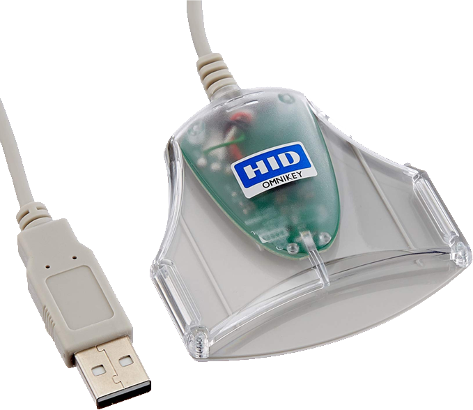
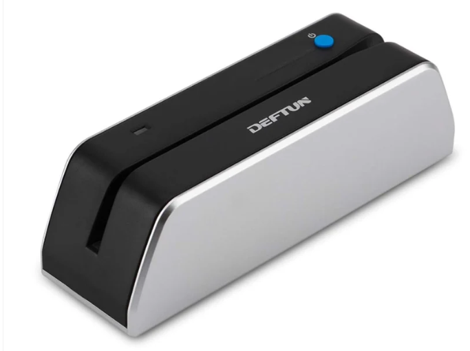
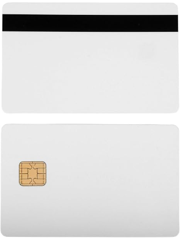

Hardware
Physical interfaces, readers, terminals, and the laboratory equipment used in formal evaluation and certification processes.



Omnikey readers (HID Global) are widely used contact and contactless smart card interfaces in EMV testing and laboratory environments. They provide reliable PC/SC connectivity for card personalization, application loading, transaction simulation, and formal evaluation of payment acceptance systems.
ReaderCompact USB card reader/writer used for contact card operations. Supports reading and writing of EMV, Java Card and ISO 7816 compliant cards. Frequently employed in development, personalization and laboratory testing setups due to its simplicity and PC/SC compatibility.
Reader / WriterUnfused JCOP (Java Card Open Platform) blank cards are essential for development, personalization and laboratory testing of EMV payment applications. These cards provide control over the card operating system and application loading prior to final fusing.
Blank Cards